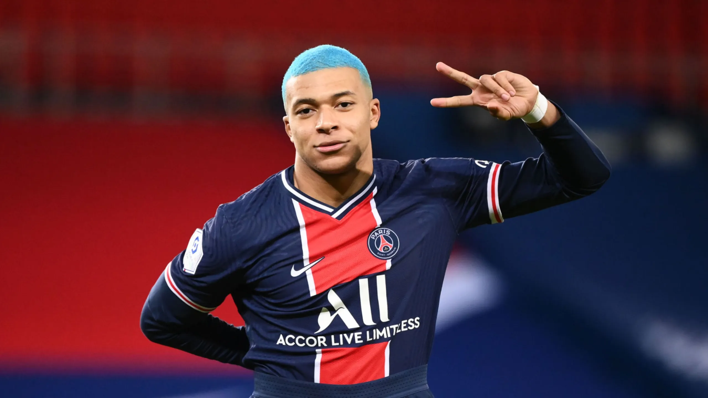

Paulo Dybala es uno de los mejores jugadores argentinos en el mundo. Su zurda, su gambeta, el remate y la habilidad lo llevaron a crecer como futbolista en Palermo, Juventus y Roma, pero la Joya se descubrió mucho antes y no lo hizo ningún cazatalentos: fue su papá.
CRISTIANO RONALDO 7
Cristiano Ronaldo dos Santos Aveiro, conocido como Cristiano Ronaldo, es un futbolista portugués. Juega como extremo izquierdo o delantero y su equipo actual es el Al-Nassr F. C. de la Liga Profesional Saudí.Es internacional absoluto con la selección de Portugal, de la cual es capitán y máximo goleador histórico.
MBAPE

Kylian Mbappé Lottin es un futbolista francés que juega como delantero en el Paris Saint-Germain F. C. de la Ligue 1. Comenzó su carrera con el AS Mónaco de la liga francesa, haciendo su debut profesional en 2015, a los 16 años.Kylian Mbappé Lottin es un futbolista francés que juega como delantero en el Paris Saint-Germain F. C. de la Ligue 1. Comenzó su carrera con el AS Mónaco de la liga francesa, haciendo su debut profesional en 2015, a los 16 años.